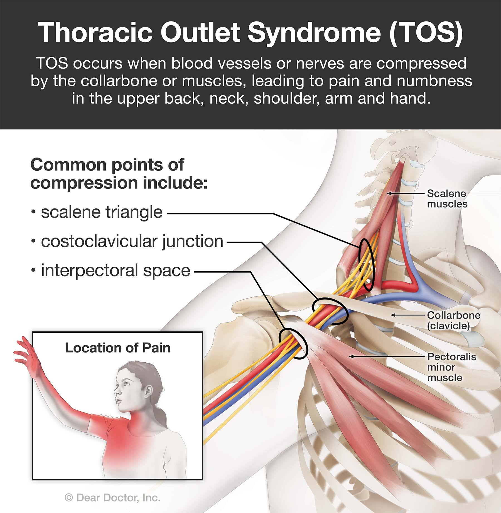

Thoracic outlet syndrome affects the space between the collarbone and first rib (thoracic outlet).
Common Causes of thoracic outlet syndrome include physical trauma from a car accident, repetitive injuries from job- or sports-related activities, certain anatomical defects (such as having an extra rib), and pregnancy. Sometimes doctors don't know the cause of thoracic outlet syndrome.
Treatment for thoracic outlet syndrome usually involves physical therapy and pain relief measures. Most people improve with these treatments. In some cases, however, your doctor may recommend surgery.

There are three general types of thoracic outlet syndrome:
It's possible to have a mix of the three different types of thoracic outlet syndrome, with multiple parts of the thoracic outlet being compressed
- Neurogenic (neurologic) thoracic outlet syndrome. This most common type of thoracic outlet syndrome is characterized by compression of the brachial plexus. The brachial plexus is a network of nerves that come from your spinal cord and control muscle movements and sensation in your shoulder, arm and hand. Thoracic outlet syndrome symptoms can vary depending on the type. When nerves are compressed, signs and symptoms of neurogenic thoracic outlet syndrome include:
- Numbness or tingling in your arm or fingers
- Pain or aches in your neck, shoulder, arm or hand
- Weakening grip
- Venous thoracic outlet syndrome. This type of thoracic outlet syndrome occurs when one or more of the veins under the collarbone (clavicle) are compressed, resulting in blood clots. Signs and symptoms of venous thoracic outlet syndrome can include:
- Discoloration of your hand (bluish color)
- Arm pain and swelling
- Blood clot in veins in the upper area of your body
- Arm fatigue with activity
- Paleness or abnormal color in one or more fingers or your hand
- Throbbing lump near your collarbone
- Arterial thoracic outlet syndrome. This is the least common type of TOS. It occurs when one of the arteries under the collarbone is compressed, resulting in bulging of the artery, also known as an aneurysm. Signs and symptoms of arterial thoracic outlet syndrome can include:
- Cold fingers, hands or arms
- Hand and arm pain
- Lack of color (pallor) or bluish discoloration (cyanosis) in one or more of your fingers or your entire hand
- Weak or no pulse in the affected arm